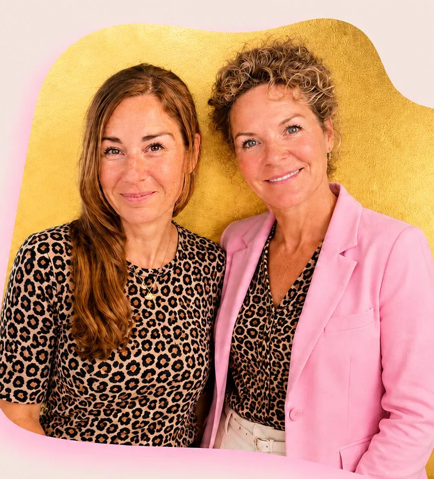
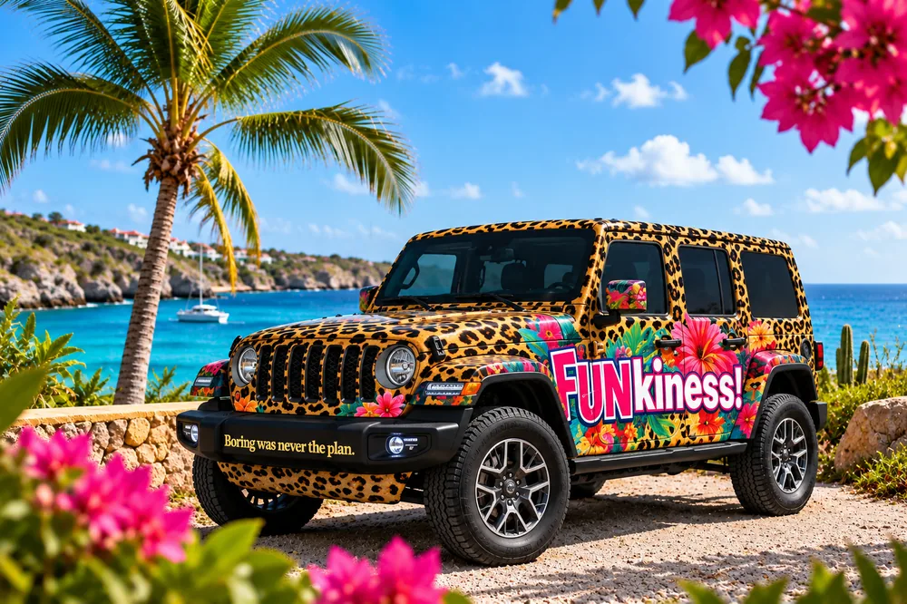

Goede marketing begint niet bij Instagram, een advertentiecampagne of wat iedereen deze maand toevallig doet. Het begint bij weten waar je naartoe wilt, wie je moet bereiken en waarom die persoon voor jou zou kiezen. FUNkiness! bouwt marketingstrategieën voor bedrijven op Curaçao die deze antwoorden vertalen naar een heldere richting en een uitvoerbaar plan.

Het is makkelijk om druk te blijven met marketing. Meer posten. Weer een campagne starten. Een nieuw platform proberen. Nog een Reel maken.
Maar activiteit zonder richting blijft gewoon activiteit.
Wij nemen eerst afstand voordat we vaart maken. We kijken naar je bedrijf, markt, doelgroep, positionering, concurrenten en doelen, en bepalen dan waar je marketing het grootste verschil kan maken.
Minder toeval.
Meer reden.
Strategie is ons werk, niet jouw huiswerk. Jij vertelt wat er speelt in je bedrijf. Wij doen het denkwerk, bewaken het plan en vertellen je wat er deze maand gebeurt. Dit zijn de vragen die we onderweg beantwoorden.
Waar moeten mensen je van kennen, en waarom zouden ze voor jou kiezen in plaats van de alternatieven? We scherpen je positionering aan, zodat de rest van je marketing iets stevigs heeft om op te bouwen.
Praat mee over positionering →Wie probeer je eigenlijk te bereiken? We bepalen de doelgroepen die ertoe doen, wat hen motiveert en hoe je merk relevant voor ze wordt.
Praat mee over doelgroep →We kijken naar wat er om je heen gebeurt, waar concurrenten dezelfde ruimte opzoeken en waar er misschien ruimte is om iets anders te doen.
Praat mee over marktpositie →Social media, zoekmachines, e-mail, partnerships, campagnes, content, offline of iets heel anders. We kiezen kanalen omdat ze strategisch kloppen, niet omdat iemand zei dat je echt op TikTok moet zitten.
Praat mee over kanalen →We bepalen waar je merk het over moet hebben, welke verhalen het vertellen waard zijn en hoe je content de bredere marketingstrategie ondersteunt.
Praat mee over content →Jij hoeft het plan niet bij te houden. Dat doen wij. We vertalen het denkwerk naar prioriteiten en acties, en elke maand krijg je één duidelijke volgende stap. Wij zorgen dat die ook gebeurt.
Praat mee over je plan →Curaçao is een kleine markt met een verrassend complex marketinglandschap. Lokale en internationale doelgroepen lopen door elkaar heen, toerisme speelt een grote rol, meerdere talen leven naast elkaar en de klant die je wilt bereiken kan op het eiland zijn, volgende week aankomen, of vanaf een heel andere plek research doen naar Curaçao.
Dat verandert hoe je een bedrijf positioneert, kanalen kiest en communiceert.
FUNkiness! is gevestigd op Curaçao, dus lokale context is niet iets dat we achteraf aan de strategie toevoegen. Het zit er vanaf het begin in.
Heb je een bedrijf op Aruba, Bonaire of in Nederland? Zelfde manier van denken, en we werken online met je samen.
Je hoeft het hele vraagstuk niet al opgelost te hebben voordat je ons belt. Dat is deel van het werk.
Een strategie die in een map verdwijnt, heeft niet zoveel nut. Zo werkt het bij ons:
1. We komen langs. Jij kiest de plek en vertelt wat er speelt. Voorbereiden hoeft niet.
2. Wij doen het denkwerk. Strategie, prioriteiten en het plan liggen bij ons.
3. Elke maand één duidelijke volgende stap. En wij zorgen dat die gebeurt.
FUNkiness! kan betrokken blijven nadat de strategie klaar is. We vertalen 'm naar social media, campagnes, AI-gedreven workflows, branding en content, zodat het denkwerk en de uitvoering dezelfde kant op blijven wijzen.
Bedenken.
Bouwen. Uitvoeren.

AI kan marketing sneller, slimmer en efficiënter maken. Maar het lost geen vage strategie op.
Daarom zetten we eerst de marketingfundamenten recht. Daarna kijken we waar AI research, content, workflows, automatisering en uitvoering kan verbeteren.
Een marketingstrategie bepaalt wie je bedrijf wil bereiken, hoe je je merk wilt positioneren, wat je met je marketing wilt bereiken en welke kanalen en activiteiten je daarbij helpen.
Ja. FUNkiness! is gevestigd op Curaçao en ontwikkelt marketingstrategieën voor bedrijven die actief zijn in de Curaçaose markt.
Ja. We kunnen bekijken wat je al hebt, hiaten en kansen in kaart brengen en de strategie aanscherpen in plaats van zomaar opnieuw te beginnen.
Ja. FUNkiness! kan betrokken blijven bij de uitvoering, van AI-marketing en social media tot branding, campagnes en content, afhankelijk van wat jouw strategie vraagt.
Zeker. We kunnen de strategie ontwikkelen voor je eigen team of bestaande partners om uit te voeren, of samen met jou de uitvoering oppakken.
Laten we uitzoeken wat jouw tijd, budget en aandacht daadwerkelijk verdient.
Plan je gratis sessie ✚